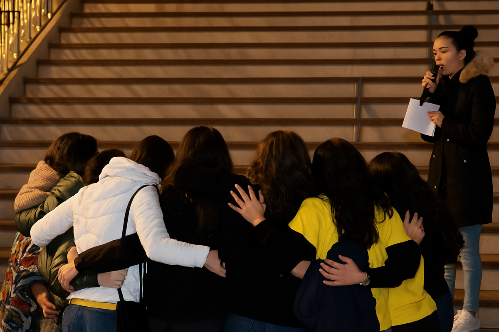

Associação de Voluntariado Universitário
Transforma Vidas Através do Voluntariado
Somos a VO.U., uma associação de voluntariado universitário dedicada a fazer a diferença nas áreas da saúde, natureza, direitos humanos e bem-estar social.
OS NOSSOS PROJETOS
A VO.U. é constituída por 10 projetos que atuam nas mais diversas áreas, tais como: saúde, animais, natureza, dança, idosos, crianças, artes e Direitos Humanos!
Vem descobri-los!
Ver todosOS NOSSOS NÚCLEOS
A VO.U. é constituída por cinco núcleos: Núcleo de Gestão, Núcleo Interno, Núcleo Externo, Núcleo Criativo e Núcleo Cultural. Os núcleos não trabalham diretamente com os beneficiários, mas são essenciais ao funcionamento da associação!
Ver todos
Porquê Voluntariar-se?
Os Benefícios do Voluntariado
Conhecer Pessoas
A VO.U. é o ponto de encontro de jovens de diferentes cursos com a mesma vontade de agir. Aqui crias laços que vão muito além do voluntariado.
Desenvolve Competências
Adquire soft skills valiosas: trabalho em equipa, liderança, comunicação e gestão.
Impacto Real
Vê o resultado direto das tuas ações. Sentir que o teu tempo mudou o dia de alguém é a nossa maior recompensa.
Valorizar o teu CV
Diferencia o teu percurso com experiência certificada. Mais do que um currículo cheio, o que conta é a atitude e o compromisso que demonstras ao assumir causas sociais.